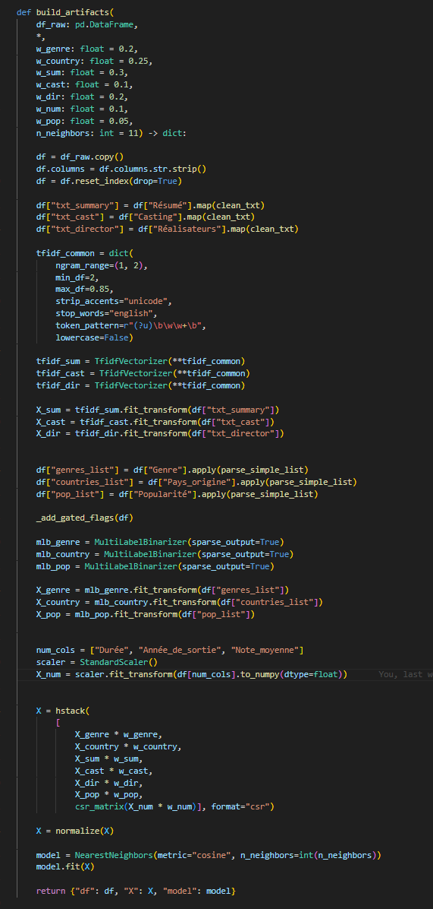
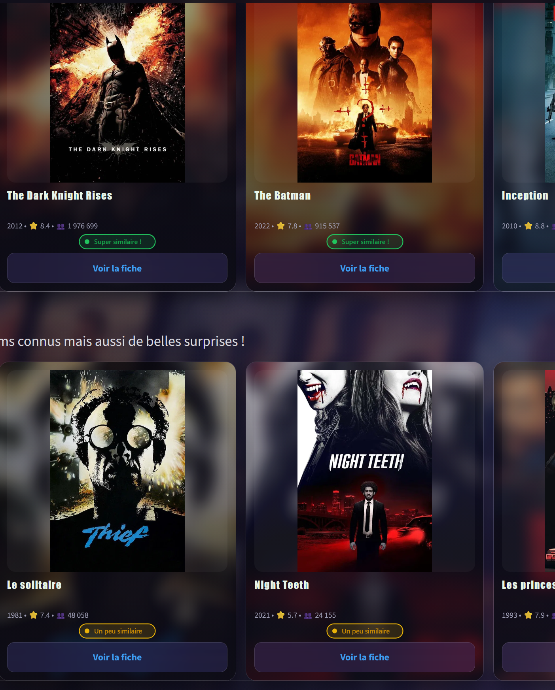

CinéData
Application de recommandation de films construite end-to-end : ingestion de 50M+ lignes IMDB, pipeline de nettoyage en 10 étapes, moteur NearestNeighbors avec vectorisation TF-IDF et distance cosine, application Streamlit déployée en production.

Page d'accueil — CinéData, déployée sur Streamlit Cloud
Pipeline IMDB + TMDB en 10 étapes
Point de départ : les datasets officiels IMDB, dont certains fichiers dépassent 50 millions de lignes.
Pour éviter de tout charger en mémoire, nous avons pré-filtré les datasets nécessaires et certaines données sont traitées par chunks,
filtrées et enrichies via la database TMDB. Chaque étape est un module Python indépendant
(s01 → s10) orchestré par pipeline.py,
garantissant la reproductibilité complète du processus.
Moteur de recommandation NearestNeighbors

Le moteur combine trois types de features pour construire une matrice de similarité :
- Texte (TF-IDF) — résumé, casting et réalisateurs vectorisés en n-grammes (1,2), min/max_df pour filtrer le bruit et sortie en matrice sparses
- Catégories (MultiLabelBinarizer) — genres, pays d'origine, popularité encodés en matrices binaires sparse aussi
- Numériques (StandardScaler) — durée, année de sortie, note moyenne normalisées
L'utilisation d'une methode de calcul "cosine" se justifie ici par la nature des features choisies. Nous avons beaucoup d'informations textuelles, et malheureusement un simple calcul euclidiéen sera beaucoup trop sensible aux différentes échelles de valeur.
Le but ici est de dégager un "profil" de film pour en saisir les similitudes, pas de comparer les valeurs brutes d'une caractéristique.
Chaque feature est pondérée (w_genre=0.2, w_sum=0.3, w_cast=0.1…) pour jouer sur leurs importances dans la recommandation.
La matrice finale est normalisée avec normalize(X) avant d'être passée à
NearestNeighbors(metric="cosine").
Résumé technique : ce choix gère efficacement les matrices sparse et donne des résultats pertinents sur des données textuelles.
Les poids ont été ajustés empiriquement : le résumé (0.30) et le pays d'origine (0.25)
ont le plus d'influence ; la popularité (0.05) et le casting (0.10) servent d'affinement.
Application interactive déployée
L'application expose le moteur dans une interface à 3 pages. Les affiches sont récupérées via l'API OMDB (avec fallback sur les URLs déjà présentes dans le dataset). Le design est personnalisé avec du CSS injecté via Markdown Streamlit. La page de recommandation affiche des badges de similarité calculés à partir des distances cosine pour différencier les niveaux de proximité entre films.

Page recommandations — badges cosine, affiches TMDB, filtres période & note
Les 3 pages de l'application
- Accueil — présentation du projet et contexte client (cinéma indépendant, département 23)
- Catalogue — exploration des 10 000 films avec filtres genre, année, note et fiches détaillées
- Recommandations — film de référence + filtres, résultats triés en 3 niveaux de popularité
🔥 Valeurs sûres
Distance cosine très faible, films très proches
⭐ Belles découvertes
Films similaires mais moins évidents
💎 Pépites cachées
Distance plus grande mais avec similarité thématique
🎨 Fiche détaillée
Chaque film possède une fiche détaillée avec des recommandations brutes sous celle-ci
Principales librairies Python
5 librairies clés parmi la vingtaine utilisée dans le projet.
Résultats & apprentissages
Un projet end-to-end complet, du fichier brut à l'application en production.
Pipeline reproductible
10 étapes modulaires (s01→s10) orchestrées par pipeline.py. Chaque étape produit des artefacts intermédiaires versionés sur GitHub.
Feature engineering hybride
TF-IDF, MultiLabelBinarizer et StandardScaler combinés avec pondération manuelle pour des recommandations précises et nuancées.
Mise en production
Application déployée sur Streamlit Cloud, architecture modulaire multi-pages, CSS personnalisé et appels API TMDB en temps réel.